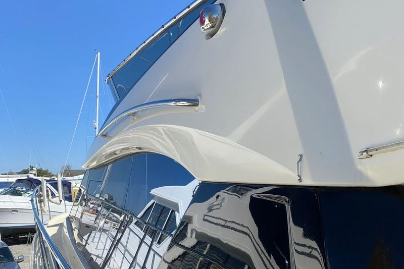

Home / Service Areas / Old Saybrook
Boat detailing in Old Saybrook, CT
Where the Connecticut River meets the Sound, and the busiest piece of water on the eastern shoreline.
Connecticut River mouth, North Cove, South Cove
Old Saybrook sits at the mouth of the Connecticut River, about fifty minutes from Milford. The 410-mile river spills into Long Island Sound here with real force on an outgoing tide, and the entrance runs between two breakwaters marked by the Saybrook Breakwater Light.
It is a busy, upscale, well-served harbor. Saybrook Point Marina handles deepwater dockage for large yachts, Safe Harbor Ferry Point occupies what is widely called the best-protected basin in the area, and North Cove holds a quieter mooring community just upriver.
Marinas, docks, and yards in Old Saybrook.
Where we detail in Old Saybrook:
Old Saybrook and the spots we work.
Old Saybrook
Where the Connecticut River meets the Sound, and the busiest piece of water on the eastern shoreline.
River force and big-boat math

The Connecticut River carries a great deal of fresh water, silt, and tannin down past Saybrook Point, and on an outgoing tide it moves hard. Boats kept here sit in genuinely mixed water, and the waterline stain that results is the brown, set-in kind that needs compounding rather than the growth that washes off a pure salt-water hull.
This is also where the boats get large. On a 60 or 80 foot hull the per-foot math changes what sensible maintenance looks like. Compounding a boat that size is a major undertaking, and doing it every couple of seasons because the finish keeps going chalky costs far more across three years than coating it properly once. Old Saybrook is one of the towns where we recommend ceramic coating outright more often than not.
Every service, priced by the foot.
The same packages we run across the shoreline. Restoration and seasonal work is quoted after a look at the boat.
Boat in Old Saybrook? Let's get it shining.
Call or send a message for a free, no-pressure quote on any service.